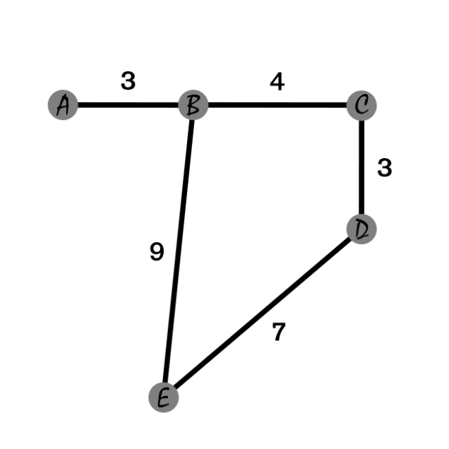

oriented graph：有向图
bidirectional edges：双向边
平面图：若能将无向图 $G=(V,E)$ 画在平面上使得任意两条无重合顶点的边不相交，则称 $G$ 是平面图。
无向正权图上某一点的偏心距：记为 $ecc(u) = \max \big{ dist(u, v) \big}$ ，即以这个点为源，到其他点的所有最短路的最大值。如下图 $A$ 点，$ecc(A)$ 即为 $12$ 。
图的直径：定义为 $d = \max \big{ ecc(u) \big}$ ，即最大的偏心距，亦可以简化为图中最远的一对点的距离。
图的中心：定义为 $arg=\min \big{ ecc(u)\big}$ ，即偏心距最小的点。如下图，图的中心即为 $B$ 点。
图的绝对中心：可以定义在边上的图的中心。
图的半径：图的半径不同于圆的半径，其不等于直径的一半（但对于绝对中心定义上的直径而言是一半）。定义为 $r = \min \big{ ecc(u) \big}$ ，即中心的偏心距。计算方式：使用全源最短路，计算出所有点的偏心距，再加以计算。

使用优先队列优化，以 $\mathcal O(M\log N)$ 的复杂度计算。
vector<int> dis(n + 1, 1E18);
auto djikstra = [&](int s = 1) -> void {
using PII = pair<int, int>;
priority_queue<PII, vector<PII>, greater<PII>> q;
q.emplace(0, s);
dis[s] = 0;
vector<int> vis(n + 1);
while (!q.empty()) {
int x = q.top().second;
q.pop();
if (vis[x]) continue;
vis[x] = 1;
for (auto [y, w] : ver[x]) {
if (dis[y] > dis[x] + w) {
dis[y] = dis[x] + w;
q.emplace(dis[y], y);
}
}
}
};
使用结构体存边（该算法无需存图），以 $\mathcal{O} (NM)$ 的复杂度计算。
int n, m, s;
cin >> n >> m >> s;
vector<tuple<int, int, i64>> ver(m + 1);
for (int i = 1; i <= m; ++i) {
int x, y;
i64 w;
cin >> x >> y >> w;
ver[i] = {x, y, w};
}
vector<i64> dis(n + 1, inf), chk(n + 1);
dis[s] = 0;
for (int i = 1; i <= 2 * n; ++i) { // 双倍松弛，获取负环信息
vector<i64> backup = dis;
for (int j = 1; j <= m; ++j) {
auto [x, y, w] = ver[j];
chk[y] |= (i > n && backup[x] + w < dis[y]);
dis[y] = min(dis[y], backup[x] + w);
}
}
for (int i = 1; i <= n; ++i) {
if (i == s) {
cout << 0 << " ";
} else if (dis[i] >= inf / 2) {
cout << "no ";
} else if (chk[i]) {
cout << "inf ";
} else {
cout << dis[i] << " ";
}
}
以 $\mathcal{O}(KM)$ 的复杂度计算，其中 $K$ 虽然为常数，但是可以通过特殊的构造退化成接近 $N$ ，需要注意被卡。
const int N = 1e5 + 7, M = 1e6 + 7;
int n, m;
int ver[M], ne[M], h[N], edge[M], tot;
int d[N], v[N];
void add(int x, int y, int w) {
ver[++ tot] = y, ne[tot] = h[x], h[x] = tot;
edge[tot] = w;
}
void spfa() {
ms(d, 0x3f); d[1] = 0;
queue<int> q; q.push(1);
v[1] = 1;
while(!q.empty()) {
int x = q.front(); q.pop(); v[x] = 0;
for (int i = h[x]; i; i = ne[i]) {
int y = ver[i];
if(d[y] > d[x] + edge[i]) {
d[y] = d[x] + edge[i];
if(v[y] == 0) q.push(y), v[y] = 1;
}
}
}
}
int main() {
cin >> n >> m;
for (int i = 1; i <= m; ++ i) {
int x, y, w; cin >> x >> y >> w;
add(x, y, w);
}
spfa();
for (int i = 1; i <= n; ++ i) {
if (d[i] == INF) cout << "N" << endl;
else cout << d[n] << endl;
}
}
使用邻接矩阵存图，可以处理负权边，以 $\mathcal{O}(N^3)$ 的复杂度计算。注意，这里建立的是单向边，计算双向边需要额外加边。
const int N = 210;
int n, m, d[N][N];
void floyd() {
for (int k = 1; k <= n; k ++)
for (int i = 1; i <= n; i ++)
for (int j = 1; j <= n; j ++)
d[i][j] = min(d[i][j], d[i][k] + d[k][j]);
}
int main() {
cin >> n >> m;
for (int i = 1; i <= n; i ++)
for (int j = 1; j <= n; j ++)
if (i == j) d[i][j] = 0;
else d[i][j] = INF;
while (m --) {
int x, y, w; cin >> x >> y >> w;
d[x][y] = min(d[x][y], w);
}
floyd();
for (int i = 1; i <= n; ++ i) {
for (int j = 1; j <= n; ++ j) {
if (d[i][j] > INF / 2) cout << "N" << endl;
else cout << d[i][j] << endl;
}
}
}
对于矩阵图，建立对偶图的过程如下（注释部分为建立原图），其中数据的给出顺序依次为：各 $n(n+1)$ 个数字分别代表从左向右、从上向下、从右向左、从下向上的边。
for (int i = 1; i <= n + 1; i++) {
for (int j = 1, w; j <= n; j++) {
cin >> w;
int pre = Hash(i - 1, j), now = Hash(i, j);
if (i == 1) {
add(s, now, w);
} else if (i == n + 1) {
add(pre, t, w);
} else {
add(pre, now, w);
}
// flow.add(Hash(i, j), Hash(i, j + 1), w);
}
}
for (int i = 1; i <= n; i++) {
for (int j = 1, w; j <= n + 1; j++) {
cin >> w;
int now = Hash(i, j), net = Hash(i, j - 1);
if (j == 1) {
add(now, t, w);
} else if (j == n + 1) {
add(s, net, w);
} else {
add(now, net, w);
}
// flow.add(Hash(i, j), Hash(i + 1, j), w);
}
}
for (int i = 1; i <= n + 1; i++) {
for (int j = 1, w; j <= n; j++) {
cin >> w;
int now = Hash(i, j), net = Hash(i - 1, j);
if (i == 1) {
add(now, s, w);
} else if (i == n + 1) {
add(t, net, w);
} else {
add(now, net, w);
}
// flow.add(Hash(i, j), Hash(i, j - 1), w);
}
}
for (int i = 1; i <= n; i++) {
for (int j = 1, w; j <= n + 1; j++) {
cin >> w;
int pre = Hash(i, j - 1), now = Hash(i, j);
if (j == 1) {
add(t, now, w);
} else if (j == n + 1) {
add(pre, s, w);
} else {
add(pre, now, w);
}
// flow.add(Hash(i, j), Hash(i - 1, j), w);
}
}
使用邻接矩阵存图，以 $\mathcal{O}(N^2+M)$ 的复杂度计算，思想与 $\tt djikstra$ 基本一致。
const int N = 550, INF = 0x3f3f3f3f;
int n, m, g[N][N];
int d[N], v[N];
int prim() {
ms(d, 0x3f); //这里的d表示到“最小生成树集合”的距离
int ans = 0;
for (int i = 0; i < n; ++ i) { //遍历 n 轮
int t = -1;
for (int j = 1; j <= n; ++ j)
if (v[j] == 0 && (t == -1 || d[j] < d[t])) //如果这个点不在集合内且当前距离集合最近
t = j;
v[t] = 1; //将t加入“最小生成树集合”
if (i && d[t] == INF) return INF; //如果发现不连通，直接返回
if (i) ans += d[t];
for (int j = 1; j <= n; ++ j) d[j] = min(d[j], g[t][j]); //用t更新其他点到集合的距离
}
return ans;
}
int main() {
ms(g, 0x3f); cin >> n >> m;
while (m -- ) {
int x, y, w; cin >> x >> y >> w;
g[x][y] = g[y][x] = min(g[x][y], w);
}
int t = prim();
if (t == INF) cout << "impossible" << endl;
else cout << t << endl;
} //22.03.19已测试
平均时间复杂度为 $\mathcal{O}(M\log M)$ ，简化了并查集。
struct DSU {
vector<int> fa;
DSU(int n) : fa(n + 1) {
iota(fa.begin(), fa.end(), 0);
}
int get(int x) {
while (x != fa[x]) {
x = fa[x] = fa[fa[x]];
}
return x;
}
bool merge(int x, int y) { // 设x是y的祖先
x = get(x), y = get(y);
if (x == y) return false;
fa[y] = x;
return true;
}
bool same(int x, int y) {
return get(x) == get(y);
}
};
struct Tree {
using TII = tuple<int, int, int>;
int n;
priority_queue<TII, vector<TII>, greater<TII>> ver;
Tree(int n) {
this->n = n;
}
void add(int x, int y, int w) {
ver.emplace(w, x, y); // 注意顺序
}
int kruskal() {
DSU dsu(n);
int ans = 0, cnt = 0;
while (ver.size()) {
auto [w, x, y] = ver.top();
ver.pop();
if (dsu.same(x, y)) continue;
dsu.merge(x, y);
ans += w;
cnt++;
}
assert(cnt < n - 1); // 输入有误，建树失败
return ans;
}
};
强连通分量缩点后的图称为 SCC。以 $\mathcal O (N + M)$ 的复杂度完成上述全部操作。
性质：缩点后的图拥有拓扑序 $color_{cnt}, color_{cnt-1},…,1$ ，可以不需再另跑一遍 $\tt topsort$ ；缩点后的图是一张有向无环图（ $\tt DAG$ 、拓扑图）。
struct SCC {
int n, now, cnt;
vector<vector<int>> ver;
vector<int> dfn, low, col, S;
SCC(int n) : n(n), ver(n + 1), low(n + 1) {
dfn.resize(n + 1, -1);
col.resize(n + 1, -1);
now = cnt = 0;
}
void add(int x, int y) {
ver[x].push_back(y);
}
void tarjan(int x) {
dfn[x] = low[x] = now++;
S.push_back(x);
for (auto y : ver[x]) {
if (dfn[y] == -1) {
tarjan(y);
low[x] = min(low[x], low[y]);
} else if (col[y] == -1) {
low[x] = min(low[x], dfn[y]);
}
}
if (dfn[x] == low[x]) {
int pre;
cnt++;
do {
pre = S.back();
col[pre] = cnt;
S.pop_back();
} while (pre != x);
}
}
auto work() { // [cnt 新图的顶点数量]
for (int i = 1; i <= n; i++) { // 避免图不连通
if (dfn[i] == -1) {
tarjan(i);
}
}
vector<int> siz(cnt + 1); // siz 每个 scc 中点的数量
vector<vector<int>> adj(cnt + 1);
for (int i = 1; i <= n; i++) {
siz[col[i]]++;
for (auto j : ver[i]) {
int x = col[i], y = col[j];
if (x != y) {
adj[x].push_back(y);
}
}
}
return {cnt, adj, col, siz};
}
};
割边缩点后的图称为边双连通图 (E-DCC)，该模板可以在 $\mathcal O (N + M)$ 复杂度内求解图中全部割边、划分边双（颜色相同的点位于同一个边双连通分量中）。
割边（桥）：将某边 $e$ 删去后，原图分成两个以上不相连的子图，称 $e$ 为图的割边。
边双连通：在一张连通的无向图中，对于两个点 $u$ 和 $v$，删去任何一条边（只能删去一条）它们依旧连通，则称 $u$ 和 $v$ 边双连通。一个图如果不存在割边，则它是一个边双连通图。
性质补充：对于一个边双，删去任意边后依旧联通；对于边双中的任意两点，一定存在两条不相交的路径连接这两个点（路径上可以有公共点，但是没有公共边）。
struct EDCC {
int n, m, now, cnt;
vector<vector<array<int, 2>>> ver;
vector<int> dfn, low, col, S;
set<array<int, 2>> bridge, direct; // 如果不需要，删除这一部分可以得到一些时间上的优化
EDCC(int n) : n(n), low(n + 1), ver(n + 1), dfn(n + 1), col(n + 1) {
m = now = cnt = 0;
}
void add(int x, int y) { // 和 scc 相比多了一条连边
ver[x].push_back({y, m});
ver[y].push_back({x, m++});
}
void tarjan(int x, int fa) {
dfn[x] = low[x] = ++now;
S.push_back(x);
for (auto &[y, id] : ver[x]) {
if (!dfn[y]) {
direct.insert({x, y});
tarjan(y, id);
low[x] = min(low[x], low[y]);
if (dfn[x] < low[y]) {
bridge.insert({x, y});
}
} else if (id != fa && dfn[y] < dfn[x]) {
direct.insert({x, y});
low[x] = min(low[x], dfn[y]);
}
}
if (dfn[x] == low[x]) {
int pre;
cnt++;
do {
pre = S.back();
col[pre] = cnt;
S.pop_back();
} while (pre != x);
}
}
auto work() {
for (int i = 1; i <= n; i++) { // 避免图不连通
if (!dfn[i]) {
tarjan(i, 0);
}
}
/**
* @param cnt 新图的顶点数量, adj 新图, col 旧图节点对应的新图节点
* @param siz 旧图每一个边双中点的数量
* @param bridge 全部割边, direct 非割边定向
*/
vector<int> siz(cnt + 1);
vector<vector<int>> adj(cnt + 1);
for (int i = 1; i <= n; i++) {
siz[col[i]]++;
for (auto &[j, id] : ver[i]) {
int x = col[i], y = col[j];
if (x != y) {
adj[x].push_back(y);
}
}
}
return tuple{cnt, adj, col, siz};
}
};
割点缩点后的图称为点双连通图 (V-DCC)，该模板可以在 $\mathcal O (N + M)$ 复杂度内求解图中全部割点、划分点双（颜色相同的点位于同一个点双连通分量中）。
割点（割顶）：将与某点 $i$ 连接的所有边删去后，原图分成两个以上不相连的子图，称 $i$ 为图的割点。
点双连通：在一张连通的无向图中，对于两个点 $u$ 和 $v$，删去任何一个点（只能删去一个，且不能删 $u$ 和 $v$自己）它们依旧连通，则称 $u$ 和 $v$ 边双连通。如果一个图不存在割点，那么它是一个点双连通图。
性质补充：每一个割点至少属于两个点双。
struct V_DCC {
int n;
vector<vector<int>> ver, col;
vector<int> dfn, low, S;
int now, cnt;
vector<bool> point; // 记录是否为割点
V_DCC(int n) : n(n) {
ver.resize(n + 1);
dfn.resize(n + 1);
low.resize(n + 1);
col.resize(2 * n + 1);
point.resize(n + 1);
S.clear();
cnt = now = 0;
}
void add(int x, int y) {
if (x == y) return; // 手动去除重边
ver[x].push_back(y);
ver[y].push_back(x);
}
void tarjan(int x, int root) {
low[x] = dfn[x] = ++now;
S.push_back(x);
if (x == root && !ver[x].size()) { // 特判孤立点
++cnt;
col[cnt].push_back(x);
return;
}
int flag = 0;
for (auto y : ver[x]) {
if (!dfn[y]) {
tarjan(y, root);
low[x] = min(low[x], low[y]);
if (dfn[x] <= low[y]) {
flag++;
if (x != root || flag > 1) {
point[x] = true; // 标记为割点
}
int pre = 0;
cnt++;
do {
pre = S.back();
col[cnt].push_back(pre);
S.pop_back();
} while (pre != y);
col[cnt].push_back(x);
}
} else {
low[x] = min(low[x], dfn[y]);
}
}
}
pair<int, vector<vector<int>>> rebuild() { // [新图的顶点数量, 新图]
work();
vector<vector<int>> adj(cnt + 1);
for (int i = 1; i <= cnt; i++) {
if (!col[i].size()) { // 注意，孤立点也是 V-DCC
continue;
}
for (auto j : col[i]) {
if (point[j]) { // 如果 j 是割点
adj[i].push_back(point[j]);
adj[point[j]].push_back(i);
}
}
}
return {cnt, adj};
}
void work() {
for (int i = 1; i <= n; ++i) { // 避免图不连通
if (!dfn[i]) {
tarjan(i, i);
}
}
}
};
判断一张图能否被二分染色。
vector<int> vis(n + 1);
auto dfs = [&](auto self, int x, int type) -> void {
vis[x] = type;
for (auto y : ver[x]) {
if (vis[y] == type) {
cout << "NO\n";
exit(0);
}
if (vis[y]) continue;
self(self, y, 3 - type);
}
};
for (int i = 1; i <= n; ++i) {
if (vis[i]) {
dfs(dfs, i, 1);
}
}
cout << "Yes\n";
很少使用这种建图法。$\tt dfs$ ：标准复杂度为 $\mathcal O(N+M)$。节点子节点的数量包含它自己（至少为 $1$），深度从 $0$ 开始（根节点深度为 $0$）。$\tt bfs$ ：深度从 $1$ 开始（根节点深度为 $1$）。$\tt topsort$ ：有向无环图（包括非联通）才拥有完整的拓扑序列（故该算法也可用于判断图中是否存在环）。每次找到入度为 $0$ 的点并将其放入待查找队列。
namespace Graph {
const int N = 1e5 + 7;
const int M = 1e6 + 7;
int tot, h[N], ver[M], ne[M];
int deg[N], vis[M];
void clear(int n) {
tot = 0; //多组样例清空
for (int i = 1; i <= n; ++i) {
h[i] = 0;
deg[i] = vis[i] = 0;
}
}
void add(int x, int y) {
ver[++tot] = y, ne[tot] = h[x], h[x] = tot;
++deg[y];
}
void dfs(int x) {
a.push_back(x); // DFS序
siz[x] = vis[x] = 1;
for (int i = h[x]; i; i = ne[i]) {
int y = ver[i];
if (vis[y]) continue;
dis[y] = dis[x] + 1;
dfs(y);
siz[x] += siz[y];
}
a.push_back(x);
}
void bfs(int s) {
queue<int> q;
q.push(s);
dis[s] = 1;
while (!q.empty()) {
int x = q.front();
q.pop();
for (int i = h[x]; i; i = ne[i]) {
int y = ver[i];
if (dis[y]) continue;
d[y] = d[x] + 1;
q.push(y);
}
}
}
bool topsort() {
queue<int> q;
vector<int> ans;
for (int i = 1; i <= n; ++i)
if (deg[i] == 0) q.push(i);
while (!q.empty()) {
int x = q.front();
q.pop();
ans.push_back(x);
for (int i = h[x]; i; i = ne[i]) {
int y = ver[i];
--deg[y];
if (deg[y] == 0) q.push(y);
}
}
return ans.size() == n; //判断是否存在拓扑排序
}
} // namespace Graph
与二分图匹配的差别在于图中可能存在奇环，时间复杂度与边的数量无关，为 $\mathcal O(N^3)$ 。下方模板编号从 $0$ 开始，例题为 UOJ #79. 一般图最大匹配 。
struct Graph {
int n;
vector<vector<int>> e;
Graph(int n) : n(n), e(n) {}
void add(int u, int v) {
e[u].push_back(v);
e[v].push_back(u);
}
pair<int, vector<int>> work() {
vector<int> match(n, -1), vis(n), link(n), f(n), dep(n);
auto find = [&](int u) {
while (f[u] != u) u = f[u] = f[f[u]];
return u;
};
auto lca = [&](int u, int v) {
u = find(u), v = find(v);
while (u != v) {
if (dep[u] < dep[v]) swap(u, v);
u = find(link[match[u]]);
}
return u;
};
queue<int> q;
auto blossom = [&](int u, int v, int p) {
while (find(u) != p) {
link[u] = v;
v = match[u];
if (vis[v] == 0) {
vis[v] = 1;
q.push(v);
}
f[u] = f[v] = p;
u = link[v];
}
};
auto augment = [&](int u) {
while (!q.empty()) q.pop();
iota(f.begin(), f.end(), 0);
fill(vis.begin(), vis.end(), -1);
q.push(u);
vis[u] = 1;
dep[u] = 0;
while (!q.empty()) {
int u = q.front();
q.pop();
for (auto v : e[u]) {
if (vis[v] == -1) {
vis[v] = 0;
link[v] = u;
dep[v] = dep[u] + 1;
if (match[v] == -1) {
for (int x = v, y = u, temp; y != -1;
x = temp, y = x == -1 ? -1 : link[x]) {
temp = match[y];
match[x] = y;
match[y] = x;
}
return;
}
vis[match[v]] = 1;
dep[match[v]] = dep[u] + 2;
q.push(match[v]);
} else if (vis[v] == 1 && find(v) != find(u)) {
int p = lca(u, v);
blossom(u, v, p);
blossom(v, u, p);
}
}
}
};
auto greedy = [&]() {
for (int u = 0; u < n; ++u) {
if (match[u] != -1) continue;
for (auto v : e[u]) {
if (match[v] == -1) {
match[u] = v;
match[v] = u;
break;
}
}
}
};
greedy();
for (int u = 0; u < n; u++) {
if (match[u] == -1) {
augment(u);
}
}
int ans = 0;
for (int u = 0; u < n; u++) {
if (match[u] != -1) {
ans++;
}
}
return {ans / 2, match};
}
};
signed main() {
int n, m;
cin >> n >> m;
Graph graph(n);
for (int i = 1; i <= m; i++) {
int x, y;
cin >> x >> y;
graph.add(x - 1, y - 1);
}
auto [ans, match] = graph.work();
cout << ans << endl;
for (auto it : match) {
cout << it + 1 << " ";
}
}
下方模板编号从 $1$ 开始，复杂度为 $\mathcal O(N^3)$ 。
namespace Graph {
const int N = 403 * 2; //两倍点数
typedef int T; //权值大小
const T inf = numeric_limits<int>::max() >> 1;
struct Q { int u, v; T w; } e[N][N];
T lab[N];
int n, m = 0, id, h, t, lk[N], sl[N], st[N], f[N], b[N][N], s[N], ed[N], q[N];
vector<int> p[N];
#define dvd(x) (lab[x.u] + lab[x.v] - e[x.u][x.v].w * 2)
#define FOR(i, b) for (int i = 1; i <= (int)(b); i++)
#define ALL(x) (x).begin(), (x).end()
#define ms(x, i) memset(x + 1, i, m * sizeof x[0])
void upd(int u, int v) {
if (!sl[v] || dvd(e[u][v]) < dvd(e[sl[v]][v])) {
sl[v] = u;
}
}
void ss(int v) {
sl[v] = 0;
FOR(u, n) {
if (e[u][v].w > 0 && st[u] != v && !s[st[u]]) {
upd(u, v);
}
}
}
void ins(int u) {
if (u <= n) { q[++t] = u; }
else {
for (int v : p[u]) ins(v);
}
}
void mdf(int u, int w) {
st[u] = w;
if (u > n) {
for (int v : p[u]) mdf(v, w);
}
}
int gr(int u, int v) {
v = find(ALL(p[u]), v) - p[u].begin();
if (v & 1) {
reverse(1 + ALL(p[u]));
return (int)p[u].size() - v;
}
return v;
}
void stm(int u, int v) {
lk[u] = e[u][v].v;
if (u <= n) return;
Q w = e[u][v];
int x = b[u][w.u], y = gr(u, x);
for (int i = 0; i < y; i++) {
stm(p[u][i], p[u][i ^ 1]);
}
stm(x, v);
rotate(p[u].begin(), y + ALL(p[u]));
}
void aug(int u, int v) {
int w = st[lk[u]];
stm(u, v);
if (!w) return;
stm(w, st[f[w]]), aug(st[f[w]], w);
}
int lca(int u, int v) {
for (++id; u | v; swap(u, v)) {
if (!u) continue;
if (ed[u] == id) return u;
ed[u] = id;
if (u = st[lk[u]]) u = st[f[u]];
}
return 0;
}
void add(int u, int a, int v) {
int x = n + 1, i, j;
while (x <= m && st[x]) ++x;
if (x > m) ++m;
lab[x] = s[x] = st[x] = 0;
lk[x] = lk[a];
p[x].clear();
p[x].push_back(a);
for (i = u; i != a; i = st[f[j]]) {
p[x].push_back(i);
p[x].push_back(j = st[lk[i]]);
ins(j);
}
reverse(1 + ALL(p[x]));
for (i = v; i != a; i = st[f[j]]) { // 复制，只需改循环
p[x].push_back(i);
p[x].push_back(j = st[lk[i]]);
ins(j);
}
mdf(x, x);
FOR(i, m) {
e[x][i].w = e[i][x].w = 0;
}
memset(b[x] + 1, 0, n * sizeof b[0][0]);
for (int u : p[x]) {
FOR(v, m) {
if (!e[x][v].w || dvd(e[u][v]) < dvd(e[x][v])) {
e[x][v] = e[u][v], e[v][x] = e[v][u];
}
}
FOR(v, n) {
if (b[u][v]) { b[x][v] = u; }
}
}
ss(x);
}
void ex(int u) {
for (int x : p[u]) mdf(x, x);
int a = b[u][e[u][f[u]].u], r = gr(u, a);
for (int i = 0; i < r; i += 2) {
int x = p[u][i], y = p[u][i + 1];
f[x] = e[y][x].u;
s[x] = 1;
s[y] = sl[x] = 0;
ss(y), ins(y);
}
s[a] = 1, f[a] = f[u];
for (int i = r + 1; i < p[u].size(); i++) {
s[p[u][i]] = -1;
ss(p[u][i]);
}
st[u] = 0;
}
bool on(const Q &e) {
int u = st[e.u], v = st[e.v];
if (s[v] == -1) {
f[v] = e.u, s[v] = 1;
int a = st[lk[v]];
sl[v] = sl[a] = s[a] = 0;
ins(a);
} else if (!s[v]) {
int a = lca(u, v);
if (!a) {
return aug(u, v), aug(v, u), 1;
} else {
add(u, a, v);
}
}
return 0;
}
bool bfs() {
ms(s, -1), ms(sl, 0);
h = 1, t = 0;
FOR(i, m) {
if (st[i] == i && !lk[i]) {
f[i] = s[i] = 0;
ins(i);
}
}
if (h > t) return 0;
while (1) {
while (h <= t) {
int u = q[h++];
if (s[st[u]] == 1) continue;
FOR(v, n) {
if (e[u][v].w > 0 && st[u] != st[v]) {
if (dvd(e[u][v])) upd(u, st[v]);
else if (on(e[u][v])) return 1;
}
}
}
T x = inf;
for (int i = n + 1; i <= m; i++) {
if (st[i] == i && s[i] == 1) {
x = min(x, lab[i] >> 1);
}
}
FOR(i, m) {
if (st[i] == i && sl[i] && s[i] != 1) {
x = min(x, dvd(e[sl[i]][i]) >> s[i] + 1);
}
}
FOR(i, n) {
if (~s[st[i]]) {
if ((lab[i] += (s[st[i]] * 2 - 1) * x) <= 0) return 0;
}
}
for (int i = n + 1; i <= m; i++) {
if (st[i] == i && ~s[st[i]]) {
lab[i] += (2 - s[st[i]] * 4) * x;
}
}
h = 1, t = 0;
FOR(i, m) {
if (st[i] == i && sl[i] && st[sl[i]] != i && !dvd(e[sl[i]][i]) && on(e[sl[i]][i])) {
return 1;
}
}
for (int i = n + 1; i <= m; i++) {
if (st[i] == i && s[i] == 1 && !lab[i]) ex(i);
}
}
return 0;
}
template<typename TT> i64 work(int N, const vector<tuple<int, int, TT>> &edges) {
ms(ed, 0), ms(lk, 0);
n = m = N; id = 0;
iota(st + 1, st + n + 1, 1);
T wm = 0; i64 r = 0;
FOR(i, n) FOR(j, n) {
e[i][j] = {i, j, 0};
}
for (auto [u, v, w] : edges) {
wm = max(wm, e[v][u].w = e[u][v].w = max(e[u][v].w, (T)w));
}
FOR(i, n) { p[i].clear(); }
FOR(i, n) FOR(j, n) {
b[i][j] = i * (i == j);
}
fill_n(lab + 1, n, wm);
while (bfs()) {};
FOR(i, n) if (lk[i]) {
r += e[i][lk[i]].w;
}
return r / 2;
}
auto match() {
vector<array<int, 2>> ans;
FOR(i, n) if (lk[i]) {
ans.push_back({i, lk[i]});
}
return ans;
}
} // namespace Graph
using Graph::work, Graph::match;
signed main() {
int n, m;
cin >> n >> m;
vector<tuple<int, int, i64>> ver(m);
for (auto &[u, v, w] : ver) {
cin >> u >> v >> w;
}
cout << work(n, ver) << "\n";
auto ans = match();
}
二分图：一个图能被分为左右两部分，任何一条边的两个端点都不在同一部分中。
匹配（独立边集）：一个边的集合，这些边没有公共顶点。
二分图最大匹配即找到边的数量最多的那个匹配。
一般我们规定，左半部包含 $n_1$ 个点（编号 $1 - n_1$），右半部包含 $n_2$ 个点（编号 $1-n_2$ ），保证任意一条边的两个端点都不可能在同一部分中。
$\mathcal O (NM)$ 。
signed main() {
int n1, n2, m;
cin >> n1 >> n2 >> m;
vector<vector<int>> ver(n1 + 1);
for (int i = 1; i <= m; ++i) {
int x, y;
cin >> x >> y;
ver[x].push_back(y); //只需要建立单向边
}
int ans = 0;
vector<int> match(n2 + 1);
for (int i = 1; i <= n1; ++i) {
vector<int> vis(n2 + 1);
auto dfs = [&](auto self, int x) -> bool {
for (auto y : ver[x]) {
if (vis[y]) continue;
vis[y] = 1;
if (!match[y] || self(self, match[y])) {
match[y] = x;
return true;
}
}
return false;
};
if (dfs(dfs, i)) {
ans++;
}
}
cout << ans << endl;
}
该算法基于最大流，常数极小，且引入随机化，几乎卡不掉。最坏时间复杂度为 $\mathcal O(\sqrt NM)$ ，经测试，在 $N,M$ 均为 $2 \times 10^5$ 的情况下能在 $\sf 60ms$ 内跑完。
struct HopcroftKarp {
int n, m;
vector<array<int, 2>> ver;
vector<int> l, r;
HopcroftKarp(int n, int m) : n(n), m(m) { // 左右半部
l.assign(n, -1);
r.assign(m, -1);
}
void add(int x, int y) {
x--, y--; // 这个板子是 0-idx 的
ver.push_back({x, y});
}
int work() {
vector<int> adj(ver.size());
mt19937 rgen(chrono::steady_clock::now().time_since_epoch().count());
shuffle(ver.begin(), ver.end(), rgen); // 随机化防卡
vector<int> deg(n + 1);
for (auto &[u, v] : ver) {
deg[u]++;
}
for (int i = 1; i <= n; i++) {
deg[i] += deg[i - 1];
}
for (auto &[u, v] : ver) {
adj[--deg[u]] = v;
}
int ans = 0;
vector<int> a, p, q(n);
while (true) {
a.assign(n, -1), p.assign(n, -1);
int t = 0;
for (int i = 0; i < n; i++) {
if (l[i] == -1) {
q[t++] = a[i] = p[i] = i;
}
}
bool match = false;
for (int i = 0; i < t; i++) {
int x = q[i];
if (~l[a[x]]) continue;
for (int j = deg[x]; j < deg[x + 1]; j++) {
int y = adj[j];
if (r[y] == -1) {
while (~y) {
r[y] = x;
swap(l[x], y);
x = p[x];
}
match = true;
++ans;
break;
}
if (p[r[y]] == -1) {
q[t++] = y = r[y];
p[y] = x;
a[y] = a[x];
}
}
}
if (!match) break;
}
return ans;
}
vector<array<int, 2>> answer() {
vector<array<int, 2>> ans;
for (int i = 0; i < n; i++) {
if (~l[i]) {
ans.push_back({i, l[i]});
}
}
return ans;
}
};
signed main() {
int n1, n2, m;
cin >> n1 >> n2 >> m;
HopcroftKarp flow(n1, n2);
while (m--) {
int x, y;
cin >> x >> y;
flow.add(x, y);
}
cout << flow.work() << "\n";
auto match = flow.answer();
for (auto [u, v] : match) {
cout << u << " " << v << "\n";
}
}
定义：找到边权和最大的那个匹配。
一般我们规定，左半部包含 $n_1$ 个点（编号 $1 - n_1$），右半部包含 $n_2$ 个点（编号 $1-n_2$ ）。
使用匈牙利算法（KM算法）解，时间复杂度为 $\mathcal O(N^3)$ 。下方模板用于求解最大权值、且可以输出其中一种可行方案，例题为 UOJ #80. 二分图最大权匹配 。
struct MaxCostMatch {
vector<int> ansl, ansr, pre;
vector<int> lx, ly;
vector<vector<int>> ver;
int n;
MaxCostMatch(int n) : n(n) {
ver.resize(n + 1, vector<int>(n + 1));
ansl.resize(n + 1, -1);
ansr.resize(n + 1, -1);
lx.resize(n + 1);
ly.resize(n + 1, -1E18);
pre.resize(n + 1);
}
void add(int x, int y, int w) {
ver[x][y] = w;
}
void bfs(int x) {
vector<bool> visl(n + 1), visr(n + 1);
vector<int> slack(n + 1, 1E18);
queue<int> q;
function<bool(int)> check = [&](int x) {
visr[x] = 1;
if (~ansr[x]) {
q.push(ansr[x]);
visl[ansr[x]] = 1;
return false;
}
while (~x) {
ansr[x] = pre[x];
swap(x, ansl[pre[x]]);
}
return true;
};
q.push(x);
visl[x] = 1;
while (1) {
while (!q.empty()) {
int x = q.front();
q.pop();
for (int y = 1; y <= n; ++y) {
if (visr[y]) continue;
int del = lx[x] + ly[y] - ver[x][y];
if (del < slack[y]) {
pre[y] = x;
slack[y] = del;
if (!slack[y] && check(y)) return;
}
}
}
int val = 1E18;
for (int i = 1; i <= n; ++i) {
if (!visr[i]) {
val = min(val, slack[i]);
}
}
for (int i = 1; i <= n; ++i) {
if (visl[i]) lx[i] -= val;
if (visr[i]) {
ly[i] += val;
} else {
slack[i] -= val;
}
}
for (int i = 1; i <= n; ++i) {
if (!visr[i] && !slack[i] && check(i)) {
return;
}
}
}
}
int work() {
for (int i = 1; i <= n; ++i) {
for (int j = 1; j <= n; ++j) {
ly[i] = max(ly[i], ver[j][i]);
}
}
for (int i = 1; i <= n; ++i) bfs(i);
int res = 0;
for (int i = 1; i <= n; ++i) {
res += ver[i][ansl[i]];
}
return res;
}
void getMatch(int x, int y) { // 获取方案 (0代表无匹配)
for (int i = 1; i <= x; ++i) {
cout << (ver[i][ansl[i]] ? ansl[i] : 0) << " ";
}
cout << endl;
for (int i = 1; i <= y; ++i) {
cout << (ver[i][ansr[i]] ? ansr[i] : 0) << " ";
}
cout << endl;
}
};
signed main() {
int n1, n2, m;
cin >> n1 >> n2 >> m;
MaxCostMatch match(max(n1, n2));
for (int i = 1; i <= m; i++) {
int x, y, w;
cin >> x >> y >> w;
match.add(x, y, w);
}
cout << match.work() << '\n';
match.getMatch(n1, n2);
}
给出一张二分图，要求选择一些点使得它们两两没有边直接连接。最小点覆盖等价于最大匹配数，转换为最小割模板，答案即为总点数减去最大流得到的值。
cout << n - flow.work(s, t) << endl;
计算一张 $\tt DAG$ 中的最长路径，在执行前可能需要使用 $\tt tarjan$ 重构一张正确的 $\tt DAG$ ，复杂度 $\mathcal O(N+M)$ 。
struct DAG {
int n;
vector<vector<pair<int, int>>> ver;
vector<int> deg, dis;
DAG(int n) : n(n) {
ver.resize(n + 1);
deg.resize(n + 1);
dis.assign(n + 1, -1E18);
}
void add(int x, int y, int w) {
ver[x].push_back({y, w});
++deg[y];
}
int topsort(int s, int t) {
queue<int> q;
for (int i = 1; i <= n; i++) {
if (deg[i] == 0) {
q.push(i);
}
}
dis[s] = 0;
while (!q.empty()) {
int x = q.front();
q.pop();
for (auto [y, w] : ver[x]) {
dis[y] = max(dis[y], dis[x] + w);
--deg[y];
if (deg[y] == 0) {
q.push(y);
}
}
}
return dis[t];
}
};
signed main() {
int n, m;
cin >> n >> m;
DAG dag(n);
for (int i = 1; i <= m; i++) {
int x, y, w;
cin >> x >> y >> w;
dag.add(x, y, w);
}
int s, t;
cin >> s >> t;
cout << dag.topsort(s, t) << "\n";
}
定义：在一张无向带权联通图中，有这样一棵生成树：满足从根节点到任意点的路径都为原图中根到任意点的最短路径。
性质：记根节点 $Root$ 到某一结点 $x$ 的最短距离 $dis_{Root,x}$ ，在 $SPT$ 上这两点之间的距离为 $len_{Root,x}$ ——则两者长度相等。
该算法与最小生成树无关，基于最短路 $\tt Djikstra$ 算法完成（但多了个等于号）。下方代码实现的功能为：读入图后，输出以 $1$ 为根的 $\tt SPT$ 所使用的各条边的编号、边权和。
map<pair<int, int>, int> id;
namespace G {
vector<pair<int, int> > ver[N];
map<pair<int, int>, int> edge;
int v[N], d[N], pre[N], vis[N];
int ans = 0;
void add(int x, int y, int w) {
ver[x].push_back({y, w});
edge[{x, y}] = edge[{y, x}] = w;
}
void djikstra(int s) { // ！注意，该 djikstra 并非原版，多加了一个等于号
priority_queue<PII, vector<PII>, greater<PII> > q; q.push({0, s});
memset(d, 0x3f, sizeof d); d[s] = 0;
while (!q.empty()) {
int x = q.top().second; q.pop();
if (v[x]) continue; v[x] = 1;
for (auto [y, w] : ver[x]) {
if (d[y] >= d[x] + w) { // ！注意，SPT 这里修改为>=号
d[y] = d[x] + w;
pre[y] = x; // 记录前驱结点
q.push({d[y], y});
}
}
}
}
void dfs(int x) {
vis[x] = 1;
for (auto [y, w] : ver[x]) {
if (vis[y]) continue;
if (pre[y] == x) {
cout << id[{x, y}] << " "; // 输出SPT所使用的边编号
ans += edge[{x, y}];
dfs(y);
}
}
}
void solve(int n) {
djikstra(1); // 以 1 为根
dfs(1); // 以 1 为根
cout << endl << ans; // 输出SPT的边权和
}
}
bool Solve() {
int n, m; cin >> n >> m;
for (int i = 1; i <= m; ++ i) {
int x, y, w; cin >> x >> y >> w;
G::add(x, y, w), G::add(y, x, w);
id[{x, y}] = id[{y, x}] = i;
}
G::solve(n);
return 0;
}
也称为全局最小割。定义补充（与《网络流》中的定义不同）：
割：是一个边集，去掉其中所有边能使一张网络流图不再连通（即分成两个子图）。
通过递归的方式来解决无向正权图上的全局最小割问题，算法复杂度 $\mathcal O(VE + V^{2}\log V)$ ，一般可近似看作 $\mathcal O(V^3)$ 。
signed main() {
int n, m;
cin >> n >> m;
DSU dsu(n); // 这里引入DSU判断图是否联通，如题目有保证，则不需要此步骤
vector<vector<int>> edge(n + 1, vector<int>(n + 1));
for (int i = 1; i <= m; i++) {
int x, y, w;
cin >> x >> y >> w;
dsu.merge(x, y);
edge[x][y] += w;
edge[y][x] += w;
}
if (dsu.Poi(1) != n || m < n - 1) { // 图不联通
cout << 0 << endl;
return 0;
}
int MinCut = INF, S = 1, T = 1; // 虚拟源汇点
vector<int> bin(n + 1);
auto contract = [&]() -> int { // 求解S到T的最小割，定义为 cut of phase
vector<int> dis(n + 1), vis(n + 1);
int Min = 0;
for (int i = 1; i <= n; i++) {
int k = -1, maxc = -1;
for (int j = 1; j <= n; j++) {
if (!bin[j] && !vis[j] && dis[j] > maxc) {
k = j;
maxc = dis[j];
}
}
if (k == -1) return Min;
S = T, T = k, Min = maxc;
vis[k] = 1;
for (int j = 1; j <= n; j++) {
if (!bin[j] && !vis[j]) {
dis[j] += edge[k][j];
}
}
}
return Min;
};
for (int i = 1; i < n; i++) { // 这里取不到等号
int val = contract();
bin[T] = 1;
MinCut = min(MinCut, val);
if (!MinCut) {
cout << 0 << endl;
return 0;
}
for (int j = 1; j <= n; j++) {
if (!bin[j]) {
edge[S][j] += edge[j][T];
edge[j][S] += edge[j][T];
}
}
}
cout << MinCut << endl;
}
欧拉路径：一笔画完图中全部边，画的顺序就是一个可行解；当起点终点相同时称欧拉回路。
有向图欧拉路径存在：$\tt ^1$ 恰有一个点出度比入度多 $1$ （为起点）；$\tt ^2$ 恰有一个点入度比出度多 $1$ （为终点）；$\tt ^3$ 恰有 $N-2$ 个点入度均等于出度。如果是欧拉回路，则上方起点与终点的条件不存在，全部点均要满足最后一个条件。
signed main() {
int n, m;
cin >> n >> m;
DSU dsu(n + 1); // 如果保证连通，则不需要 DSU
vector<unordered_multiset<int>> ver(n + 1); // 如果对于字典序有要求，则不能使用 unordered
vector<int> degI(n + 1), degO(n + 1);
for (int i = 1; i <= m; i++) {
int x, y;
cin >> x >> y;
ver[x].insert(y);
degI[y]++;
degO[x]++;
dsu.merge(x, y); // 直接当无向图
}
int s = 1, t = 1, cnt = 0;
for (int i = 1; i <= n; i++) {
if (degI[i] == degO[i]) {
cnt++;
} else if (degI[i] + 1 == degO[i]) {
s = i;
} else if (degI[i] == degO[i] + 1) {
t = i;
}
}
if (dsu.size(1) != n || (cnt != n - 2 && cnt != n)) {
cout << "No\n";
} else {
cout << "Yes\n";
}
}
无向图欧拉路径存在：$\tt ^1$ 恰有两个点度数为奇数（为起点与终点）；$\tt ^2$ 恰有 $N-2$ 个点度数为偶数。
signed main() {
int n, m;
cin >> n >> m;
DSU dsu(n + 1); // 如果保证连通，则不需要 DSU
vector<unordered_multiset<int>> ver(n + 1); // 如果对于字典序有要求，则不能使用 unordered
vector<int> deg(n + 1);
for (int i = 1; i <= m; i++) {
int x, y;
cin >> x >> y;
ver[x].insert(y);
ver[y].insert(x);
deg[y]++;
deg[x]++;
dsu.merge(x, y); // 直接当无向图
}
int s = -1, t = -1, cnt = 0;
for (int i = 1; i <= n; i++) {
if (deg[i] % 2 == 0) {
cnt++;
} else if (s == -1) {
s = i;
} else {
t = i;
}
}
if (dsu.size(1) != n || (cnt != n - 2 && cnt != n)) {
cout << "No\n";
} else {
cout << "Yes\n";
}
}
vector<int> ans;
auto dfs = [&](auto self, int x) -> void {
while (ver[x].size()) {
int net = *ver[x].begin();
ver[x].erase(ver[x].begin());
self(self, net);
}
ans.push_back(x);
};
dfs(dfs, s);
reverse(ans.begin(), ans.end());
for (auto it : ans) {
cout << it << " ";
}
auto dfs = [&](auto self, int x) -> void {
while (ver[x].size()) {
int net = *ver[x].begin();
ver[x].erase(ver[x].find(net));
ver[net].erase(ver[net].find(x));
cout << x << " " << net << endl;
self(self, net);
}
};
dfs(dfs, s);
给出一组包含 $m$ 个不等式，有 $n$ 个未知数的形如：$ \begin{cases} u_1-v_1\leq w_1 \u_2-v_2 \leq w_2 \ \cdots\ u_m -v_m\leq w_m\end{cases}$的不等式组，求任意一组满足这个不等式组的解。$\sf SPFA$ 解，$\mathcal O(nm)$ 。参考
signed main() {
int n, m;
cin >> n >> m;
vector<array<int, 3>> e(m + 1);
for (int i = 1; i <= m; i++) {
int u, v, w;
cin >> u >> v >> w;
e[i] = {v, u, w};
}
vector<int> d(n + 1, 1E9);
d[1] = 0;
for (int i = 1; i < n; i++) {
for (int j = 1; j <= m; j++) {
auto [u, v, w] = e[j];
d[v] = min(d[v], d[u] + w);
}
}
for (int i = 1; i <= m; i++) {
auto [u, v, w] = e[i];
if (d[v] > d[u] + w) {
cout << "NO\n";
return 0;
}
}
for (int i = 1; i <= n; i++) {
cout << d[i] << " \n"[i == n];
}
return 0;
}
基于 tarjan 缩点，时间复杂度为 $\mathcal O(N+M)$ 。注意下标从 $0$ 开始，答案输出为字典序最小的一个可行解。
struct TwoSat {
int n;
vector<vector<int>> e;
vector<bool> ans;
TwoSat(int n) : n(n), e(2 * n), ans(n) {}
void add(int u, bool f, int v, bool g) {
e[2 * u + !f].push_back(2 * v + g);
e[2 * v + !g].push_back(2 * u + f);
}
bool work() {
vector<int> id(2 * n, -1), dfn(2 * n, -1), low(2 * n, -1);
vector<int> stk;
int now = 0, cnt = 0;
auto tarjan = [&](auto self, int u) -> void {
stk.push_back(u);
dfn[u] = low[u] = now++;
for (auto v : e[u]) {
if (dfn[v] == -1) {
self(self, v);
low[u] = min(low[u], low[v]);
} else if (id[v] == -1) {
low[u] = min(low[u], dfn[v]);
}
}
if (dfn[u] == low[u]) {
int v;
do {
v = stk.back();
stk.pop_back();
id[v] = cnt;
} while (v != u);
++cnt;
}
};
for (int i = 0; i < 2 * n; ++i) {
if (dfn[i] == -1) {
tarjan(tarjan, i);
}
}
for (int i = 0; i < n; ++i) {
if (id[2 * i] == id[2 * i + 1]) return false;
ans[i] = id[2 * i] > id[2 * i + 1];
}
return true;
}
vector<bool> answer() {
return ans;
}
};
在运行后针对每一个点进行一次 dfs，时间复杂度为 $\mathcal O(N^2)$ ，当且仅当答案唯一时才输出，否则输出 ? 替代。
// 结构体中增加
int check(int x, int y) {
vector<int> vis(2 * n);
auto dfs = [&](auto self, int x) -> void {
vis[x] = 1;
for (auto y : e[x]) {
if (vis[y]) continue;
self(self, y);
}
};
dfs(dfs, x);
return vis[y];
}
// 主函数中增加
for (int i = 0; i < n; i++) {
if (sat.check(2 * i, 2 * i + 1)) {
cout << 1 << " ";
} else if (sat.check(2 * i + 1, 2 * i)) {
cout << 0 << " ";
} else {
cout << "?" << " ";
}
}